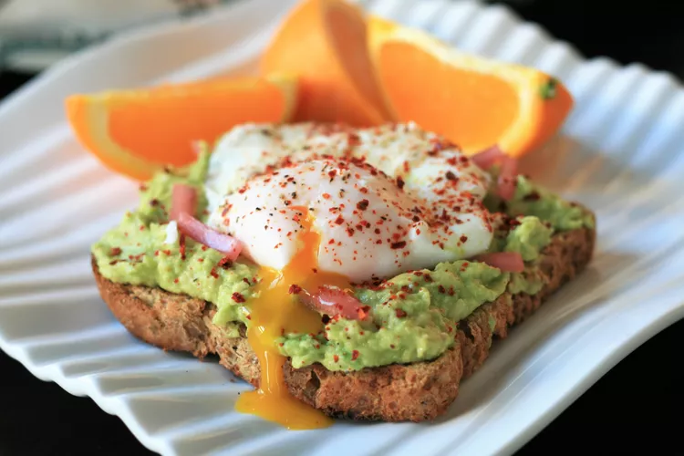

Avocado Toast and Egg

Ingredients
- 1 small shallot, thinly sliced into rings
- 1 tablespoon red wine vinegar
- salt to taste
- 1 small avocado, pitted and peeled
- ¼ lime, juiced
- 1 egg
- 1 tablespoon white vinegar
- freshly ground black pepper to taste
- 1 slice whole-grain crusty bread
- 1 pinch Aleppo pepper, to taste
Recipe
- Combine shallot, red wine vinegar, and a pinch of salt in a bowl; set aside. Mash avocado with lime juice and salt in a second bowl.
- Heat 2 to 3 inches of water in a small, shallow saucepan until boiling. Add vinegar and reduce heat to a light simmer. Crack egg into a small ramekin and lower it to the surface of the water, carefully easing it out of the ramekin into the simmering water. Poach egg until white is completely set and yolk is slightly soft, 3 to 4 minutes. Remove with a slotted spoon and transfer to a paper-towel lined plate. Sprinkle with salt and pepper.
- Toast bread to your liking and remove to a plate. Top with mashed avocado, some of the pickled shallot, and poached egg. Sprinkle with aleppo pepper and serve immediately.